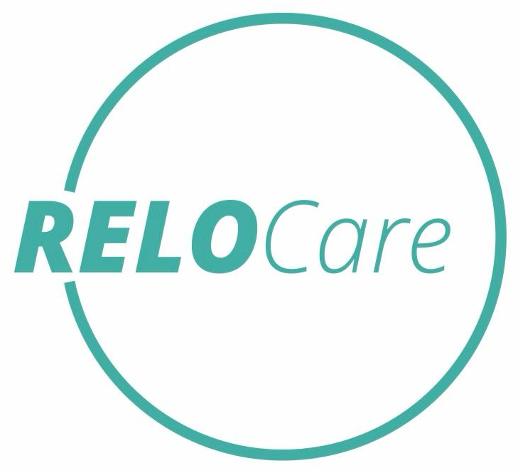

W Niemczech brakuje ponad 80 000 miejsc w placówkach opiekuńczych rocznie. Polskie domy seniora oferują wysoki standard przy kosztach 2–3× niższych niż w Niemczech. Konsorcjum Bonam Curam dostarcza gotowych, zakwalifikowanych pensjonariuszy — i obsługuje cały proces kontraktu po stronie niemieckiej.
Niemcy borykają się z dramatycznym niedoborem miejsc opiekuńczych przy jednocześnie starzejącym się społeczeństwie. Rodziny seniorów szukają placówek za granicą — w Polsce, Czechach, na Słowacji. Polska jest pierwszym wyborem: bliskość geograficzna, wysoki standard opieki, sprawdzone polskie opiekunki znane z wieloletniej pracy na rynku DE.
Pensjonariusz z Niemiec to wyższy przychód dobowy, płatność terminowa przez system ubezpieczeniowy Pflegekasse i wieloletni kontrakt bez uzależnienia od lokalnego rynku. Jeden klient DE może przynosić 30–50% więcej przychodu niż klient krajowy przy tym samym miejscu.
Nie ma tu żadnej „misji poszukiwań". Jest ustrukturyzowany proces z jasnym podziałem ról i obowiązków.
Stawki z kontraktów DE przewyższają standardowe stawki krajowe. Pensjonariusz z Niemiec oznacza wyższy, przewidywalny przychód w perspektywie wieloletniej — mniejsza zależność od wahań lokalnego rynku i sezonowych luk w obłożeniu.
Konsorcjum przejmuje cały koszt i wysiłek marketingu po stronie DE: reklama, kontakt z rodziną, kwalifikacja potrzeb, dokumentacja, tłumaczenia i obsługa prawna umowy. Obiekt nie ponosi żadnych kosztów aż do momentu podpisania kontraktu.
Senior z Niemiec to zazwyczaj rezydent długoterminowy. Dobra opieka i sprawna komunikacja z rodziną to najlepsza rekomendacja — Relo Care Group aktywnie buduje tę reputację, co generuje kolejnych klientów z sieci poleceń w Niemczech.
Główny partner Konsorcjum na rynku niemieckim. Berlińska firma specjalizująca się w pośrednictwie opiekuńczym — łączy doświadczenie w obsłudze rodzin, znajomość systemu Pflegekasse i Pflegegeld oraz wieloletnią sieć kontaktów z polskimi placówkami opiekuńczymi.
Zakres odpowiedzialności
Platforma doradcza i pośrednicząca dla seniorów i rodzin szukających opieki domowej lub stacjonarnej. Stanowi pierwszy punkt kontaktu dla wielu klientów DE — buduje zaufanie do polskiej oferty opiekuńczej i kieruje gotowych, zdecydowanych klientów do obiektów partnerskich Konsorcjum.
Pflegehilfe für Senioren działa jako kanał generowania leadów: rodzina kontaktuje się z platformą po poleceniu lub z wyszukiwarki, przechodzi kwalifikację, a następnie — jeśli stacjonarna placówka w Polsce odpowiada jej potrzebom — trafia do Relo Care Group i dalej do konkretnego obiektu partnerskiego.
Silna pozycja na rynku DE nie powstaje od jednego folderu. Wymaga właściwej prezentacji i gotowości operacyjnej. Pomagamy Ci ją zbudować.
Klient DE i jego rodzina oczekują jasnych informacji o standardzie, wyposażeniu, dostępności opieki i procedurach bezpieczeństwa. Przygotowujemy dokumentację obiektu w formacie czytelnym dla systemu DE.
Rodzina seniora komunikuje się w języku DE — przed przyjęciem, jak i przez cały czas pobytu. Relo Care Group zapewnia pełną ciągłość tej komunikacji; od obiektu wymagamy jedynie osoby kontaktowej i gotowości do współpracy.
System finansowania opieki w Niemczech działa przez ubezpieczenie pielęgnacyjne (Pflegekasse). Konsorcjum zna ten system od strony formalnej i przeprowadza obiekt przez cały proces rozliczeń — bez samodzielnego uczenia się procedur.
CM Judyta wspiera obiekty w przygotowaniu protokołów opieki, dokumentacji operacyjnej i standardów, które są czytelne i wiarygodne dla klientów i rodzin z Niemiec.
Przeprowadzamy bezpłatną ocenę gotowości. Jeśli obiekt spełnia wymagania — uruchamiamy kanał pozyskiwania klientów DE. Jeśli nie — mówimy wprost, co trzeba poprawić, i pomagamy to zrobić.
Co dostajesz po ocenie gotowości